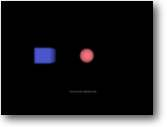

7. Colisões Objetivo: Detectar a colisão
entre 2 objetos |
 |
Neste exemplo
usarei 2 entidades prontas, uma Esfera e um Cubo.
O programa exibirá uma mensagem uma vez que a esfera entrar em contato
com o cubo. Rode o programa primeiro para entender o que está acontecendo
antes de entrar no código-fonte abaixo.
| Graphics3D 800,600 Const CUBE_COL=1 Const SPHERE_COL=2 SetBuffer BackBuffer() camera=CreateCamera() CameraViewport camera,0,0,800,600 PositionEntity camera,0,0,-5 light=CreatLight() cube=CreateCube() PositionEntity cube,-5,0,5 EntityColor cube,70,80,190 EntityType cube,CUBE_COL sphere=CreateSphere(12) PositionEntity sphere,5,0,5 EntityColor sphere,170,80,90 EntityType sphere,SPHERE_COL Collisions SPHERE_COL,CUBE_COL,3,1 While Not KeyHit(1) MoveEntity sphere,-0.02,0,0 UpdateWorld RenderWorld If EntityCollided(sphere,CUBE_COL) Then Text 370,80,"Colidiram !!!" EndIf Text 335,500,"Detecção de Colisão" Flip Wend End |
Poder verificar
colisões é talvez a parte principal de qualquer jogo. Afinal de
contas, sem detecção de colisão o que vai evitar que o
Mario afunde no chão, ou fazer com que as balas da arma de Max Payne
causem dano? Nós precisamos disto - quer você queira ou não!
Se você olhar cuidadosamente o exemplo você notará vários
comandos novos. Vamos analisar todo o programa antes de olharmos cada comando.
Primeiramente nós criamos 2 objetos - um Cubo e uma Esfera -, então
nós ativamos a detecção de colisão de forma que
o B3D vai conferir estes objetos cada vez que a função UpdateWorld
for chamada.
Lentamente nós movemos a Esfera em direção ao Cubo, até
que eles colidam. Depois disso, nós imprimimos uma mensagem na tela para
sinalizar que houve a colisão.
Então, o que estas novas instruções fazem?
| Const CUBE_COL=1 Const SPHERE_COL=2 |
Ok, isso não é uma instrução, mas
apenas algo que eu acrescentei a este exemplo. Quando estiver programando tente
fazer as coisas o mais fácil possível - certamente ajudará
quando vier a depurar (procurar erros).
As instruções de Colisão que nós temos se baseiam
em variáveis, mas em lugar apenas usar números eu usarei CONSTANTES.
Assim, a partir destas duas linhas, eu posso usar a váriável CUBE_COL
toda vez eu quiser usar 1 e SPHERE_COL em vez de 2. Embora, claro, que eu pudesse
usar apenas os números com as instruções, mas isso nos
ajudará como você vai ver.
| EntityType cube,CUBE_COL |
Depois que nós tivermos definido o nosso objeto, nós precisamos definir uma variável de colisão para ele. Nós fazemos isto atribuíndo um número à entidade. Como você pode ver, para fazer isto nós usamos o comando EntityType. Aqui eu fixei o cubo para ter o valor 1. (se lembre que a constante CUBE_COL tem valor 1)
| EntityType sphere,SPHERE_COL |
Como antes, nós definimos a variável de colisão
de esfera para ter o valor 2.
UMA NOTA IMPORTANTE!
Toda entidade NÃO tem que ter um valor de colisão separado. Por
exemplo, nós criamos um labirinto 3d que tem 10 objetos para as laterais
do labirinto. Nós iríamos querer conferir se colidimos com uma
parede, qual parede não importa... só uma parede. Assim todo objeto
(entidade) parede teria a mesma variável de colisão.
Eu usaria o código:
Const WALL=1
EntityType wall1,WALL
EntityType wall2,WALL... etc
Mais tarde quando nós precisarmos checar uma colisão nós
apenas dizemos: 'há uma colisão com a parede?' Fácil, não?
| Collisions SPHERE_COL,CUBE_COL,3,1 |
Agora a diversão
começa, esta é a instrução principal que informa
o B3D em quais objetos verificar colisões e que ação tomar.
A primeira parte da linha está dizendo que nós queremos que a
verificação aconteça entre os marcadores de colisão
1 e 2. (Se lembre que a Esfera é 1 e o Cubo é 2)
Se nós tivéssemos mais entidades com o mesmo valor de colisão,
então claro que estes também seriam incluídos.
O primeiro valor (3), representa o tipo de colisão que nós queremos
que o B3D execute, neste caso nós estamos usando modo '3' - que é
uma colisão de Esfera-para-Caixa.
O B3D tem 3 tipos diferentes de colisões que nós podemos executar,
estes são:
| 1 = Esfera-para-Esfera
2 = Esfera-para-Polígono 3 = Esfera-para-Caixa |
Agora vamos ao
último valor (1). Este é o valor de resposta. Ele sinaliza o que
o B3D deve fazer quando uma colisão acontece. Eu usei o valor 1 que é
usado para uma parada. (Quando colidir com algo, o objeto pára)
Como antes existem 3 modos que podemos usar:
| 1 = Parar
2 = Slide1 - Objeto desliza 3 = Slide2 - Objeto desliza, levando em conta o ângulo dos polígonos |
Embora em meu programa
eu esteja movento a esfera com o comando MoveEntity, quando acontecer a colisão
a entidade não moverá através do cubo (porque eu usei o
modo de PARADA).
Nós temos mais um comando para observar. Essa é a própria
instrução de verificação de colisão.
|
If
EntityCollided(sphere,CUBE_COL) then Text 370,80,"Colidiram !!!" EndIf |
Como você pode provavelmente adivinhar, esta instrução
(embutida em um IF) está conferindo a entidade ESFERA para uma colisão
com a variável de colisão 1 (o cubo).
Se colidiu então imprima a mensagem para sinalizar uma colisão!
Ok, nós passamos pelo programa inteiro, mas fez sentido para você?
Não é esperado que você entenda tudo logo de início.
O melhor modo para aprender as várias instruções de colisão
é experimentar com os deferentes modos. Eventualmente (se você
não entendeu completamente até agora) você vai perceber
como podem ser fáceis e poderosos.
Tutorial 8 - Vértices